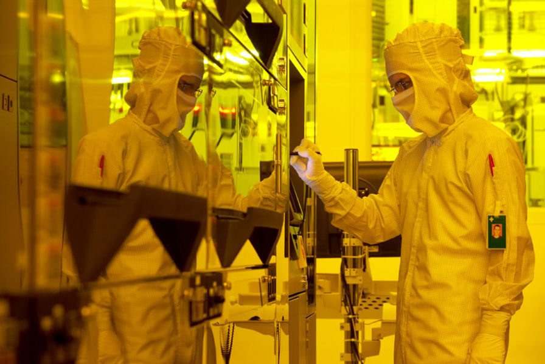
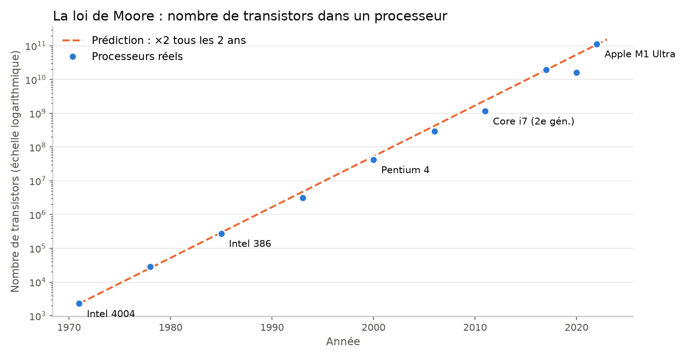
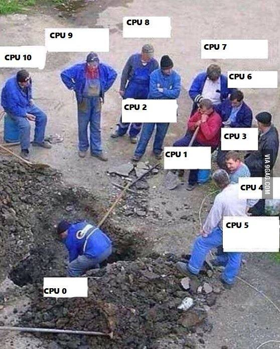
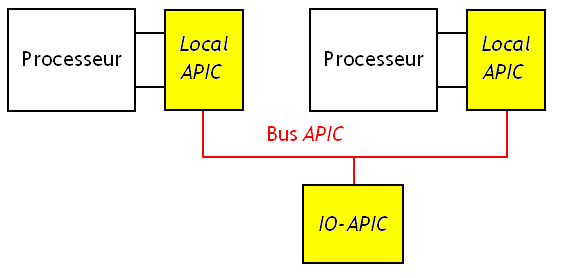
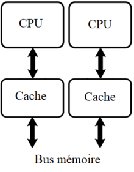
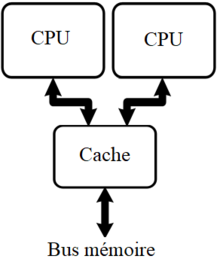
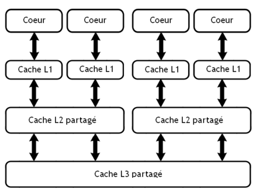
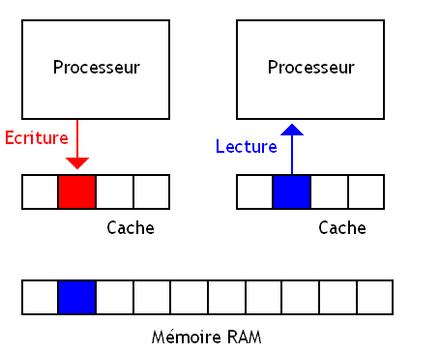

class: center, middle # L'architecture matérielle ## La loi de Moore et les processeurs multicœurs <img height="300px" src="img/die_i7_2600k.png"> --- ## Quelques questions de réflexion... * Pourquoi les fréquences des processeurs n'augmentent-elles presque plus depuis 2005 (autour de 3 à 5 GHz) ? * Un processeur double cœur à 2,3 GHz équivaut-il à un processeur à 4,6 GHz ? * Votre ordinateur semble faire plusieurs choses en même temps (musique, navigateur, téléchargement). Est-ce vraiment le cas ? * « 8 cœurs / 16 threads » : qu'est-ce que cela signifie ? --- ## Le transistor .pull-left[ <img height="230px" src="img/transistors.jpg"> ] .pull-right[ <p></p> ] <div style="clear: both;"></div> * Un **transistor** est un **interrupteur électronique** : il laisse passer le courant ou non, selon la tension qu'on lui applique. C'est la brique de base des portes logiques, donc des processeurs. * Il est fabriqué en **silicium**, un **semi-conducteur** extrait du sable : un matériau qui peut, selon les conditions, conduire ou non l'électricité. * Les processeurs sont gravés dans des **salles blanches**, sans aucune poussière : une seule particule suffirait à détruire des milliers de transistors. --- ## La loi de Moore En **1965**, **Gordon Moore** (qui cofondera Intel en 1968) prédit que le nombre de transistors dans une puce va **doubler régulièrement**. En 1975, il précise : **tous les deux ans**. Ce n'est pas une loi physique, mais plutôt une **prophétie auto-réalisatrice** : pendant 50 ans, toute l'industrie a calqué ses objectifs sur cette prédiction. <div style="text-align: center;"> <p></p> </div> --- ## La loi de Moore : vérifions ! * En **1971**, le premier microprocesseur d'Intel, le **4004**, contient **2300 transistors**. Il effectue environ 90 000 opérations par seconde. * Entre 1971 et 2021, il s'écoule 50 ans, soit **25 doublements** (un tous les 2 ans). * Selon la loi de Moore, en 2021 : 2300 × 2<sup>25</sup> ≈ **77 milliards** de transistors. * En réalité, l'Apple M1 Max (2021) contient **57 milliards** de transistors. <span style="color: red;">→ Une prédiction remarquablement exacte pendant 50 ans ! Plus le temps passe, plus chaque doublement représente un nombre énorme de transistors : la croissance est **exponentielle**.</span> --- ## Les limites de la loi de Moore Pour mettre plus de transistors sur une puce, il faut les rendre **plus petits**. On parle de **finesse de gravure**, mesurée en **nanomètres** (1 nm = un milliardième de mètre) : 10 000 nm en 1971, 14 nm en 2014, 3 nm aujourd'hui. Mais à cette échelle, les problèmes s'accumulent : * **l'effet tunnel** : les transistors ne font plus que quelques dizaines d'atomes de large. Les électrons commencent à « traverser » les barrières et à passer d'un transistor à l'autre sans qu'on le leur demande ; * **la chaleur** : plus de transistors dans un même espace = plus de chaleur à évacuer ; * **le coût** : les usines deviennent si chères que seuls **trois fabricants** suivent encore la course aux plus fines gravures : TSMC (Taïwan), Samsung (Corée du Sud) et Intel (États-Unis). Depuis les années 2010, le rythme ralentit : le doublement prend plutôt 2,5 à 3 ans. --- ## La fin de la course aux GHz Pendant longtemps, pour rendre un processeur plus puissant, on augmentait sa **fréquence**. Mais plus la fréquence est élevée, plus le processeur **consomme** et **chauffe** (c'est l'**effet Joule** : un courant électrique qui traverse un conducteur produit de la chaleur). Au début des années 2000, un processeur monocœur pouvait consommer **plus de 100 W** : il devenait très difficile de le refroidir. **La solution** : au lieu d'un seul cœur très rapide, mettre **plusieurs cœurs** sur la même puce, qui travaillent **en parallèle** sans augmenter la fréquence. → En **2005**, Intel et AMD commercialisent les premiers processeurs **multicœurs** pour le grand public. --- ## Qu'est-ce qu'un cœur ? <img height="170px" src="img/die_i7_2600k.png" style="float: right; margin-left: 30px;"> Un **cœur** (*core*) est un ensemble de circuits capable d'**exécuter un programme de façon autonome**. Il contient tout ce qu'il faut pour cela : * un **compteur ordinal** ; * des **registres** ; * des **unités de calcul** (UAL) ; * sa propre mémoire **cache** (L1). Un processeur **multicœur** contient plusieurs cœurs indépendants sur une même puce (le *die*) : *dual-core* (2), *quad-core* (4), *hexa-core* (6), *octa-core* (8)... Sur la photo ci-contre (Intel Core i7-2600K), on distingue bien les **4 cœurs**, le processeur graphique intégré et le **cache L3 partagé**. --- ## Un seul cœur : l'illusion du multitâche Un cœur ne peut traiter qu'**une seule instruction à la fois** : il travaille **en série**. Pourtant, avec un processeur monocœur, on peut écouter de la musique tout en surfant sur Internet... Comment est-ce possible ? Le **système d'exploitation** donne la main à chaque programme à tour de rôle, pendant quelques millisecondes. Le processeur passe d'un programme à l'autre **tellement vite** qu'on a l'impression qu'ils tournent en même temps. Mais il n'en est rien ! **Analogie** : un cuisinier seul qui prépare trois plats en passant sans cesse d'une casserole à l'autre. Les trois plats avancent... mais il ne fait qu'une seule chose à la fois. --- ## Multitâche ou parallèle ? * **Programmation concurrente (multitâche)** : plusieurs tâches progressent **en alternance** et se partagent les mêmes ressources (le processeur, la mémoire). C'est possible avec un seul cœur. * **Programmation parallèle** : plusieurs tâches s'exécutent **réellement en même temps**, sur plusieurs cœurs (ou plusieurs processeurs). Avec plusieurs cœurs, le système d'exploitation peut répartir les programmes sur les différents cœurs : c'est l'**ordonnancement** des tâches. **Analogie** : trois cuisiniers, chacun devant sa casserole. --- ## Plusieurs cœurs = plus rapide ? <p></p> **Pas toujours !** * Un programme conçu pour un seul cœur n'ira **pas plus vite** sur un processeur à 8 cœurs : 7 cœurs le regarderont travailler... * Le gain se fait sentir quand on lance **plusieurs programmes**, ou quand le programme a été **écrit pour le parallélisme** (montage vidéo, rendu 3D, compression...). * Certaines tâches ne peuvent tout simplement pas être découpées : chaque étape a besoin du résultat de la précédente. <span style="color: red;">→ Un double cœur à 2,3 GHz n'est **pas** un processeur à 4,6 GHz ! Chaque cœur reste à 2,3 GHz.</span> --- ## Plusieurs cœurs = plus rapide ? **Exemple** : une tâche dure **10 secondes** sur un cœur. Seule **la moitié** de cette tâche peut être répartie sur plusieurs cœurs. Avec **4 cœurs** : * la partie non parallélisable dure toujours **5 s** ; * la partie parallélisable est divisée par 4 : 5 / 4 = **1,25 s** ; * durée totale : 5 + 1,25 = **6,25 s** (et non 10 / 4 = 2,5 s !). Même avec 1000 cœurs, la tâche durera toujours plus de 5 secondes : c'est la partie **non parallélisable** qui limite le gain. --- ## Cœurs symétriques et asymétriques * Dans un processeur **symétrique**, tous les cœurs sont **identiques**. * Dans un processeur **asymétrique**, la puce contient des cœurs **différents**. **Exemple actuel** : la plupart des smartphones, les processeurs Apple (M1, M2...) et les processeurs Intel depuis 2021 combinent : * des cœurs **performants** (*P-cores*), puissants mais gourmands, pour les tâches lourdes ; * des cœurs **économes** (*E-cores*), plus lents mais qui consomment très peu, pour les tâches de fond. <span style="color: red;">→ Résultat : de meilleures performances quand il le faut, et une batterie qui dure plus longtemps.</span> --- ## Les interruptions Une **interruption** est une suspension temporaire d'un programme afin d'exécuter un programme **prioritaire**. **Exemple** : vous appuyez sur une touche du clavier pendant qu'un calcul est en cours. Le processeur enregistre l'état du calcul, traite la touche, puis reprend le calcul là où il s'était arrêté. <div style="text-align: center;"> <p></p> </div> Dans un processeur multicœur, chaque cœur possède son propre **contrôleur d'interruptions** (*local APIC*). Un contrôleur global (*I/O APIC*) répartit les interruptions entre les cœurs. --- ## Les caches : rappel Toutes les mémoires n'ont ni la même vitesse, ni le même prix : * les **registres**, au cœur du processeur : les plus rapides et les plus chers ; * les **caches L1, L2 et L3** : de petites mémoires très rapides situées **sur le processeur**, qui gardent une copie des données les plus utilisées ; * la **mémoire vive** (RAM) : beaucoup plus grande, mais beaucoup plus lente. Avec plusieurs cœurs, une question se pose : chaque cœur doit-il avoir **son propre cache**, ou les cœurs doivent-ils **partager** un cache ? --- ## Cache dédié ou cache partagé ? .pull-left[ <div style="text-align: center;"><p></p><br><strong>Cache dédié</strong></div> ] .pull-right[ <div style="text-align: center;"><p></p><br><strong>Cache partagé</strong></div> ] <div style="clear: both;"></div> .small-table[ | | **Cache dédié** (un par cœur) | **Cache partagé** (commun) | |:---|:---|:---| | Vitesse | plus rapide (petit et proche) | plus lent (plus grand) | | Répartition de l'espace | fixe : chaque cœur a sa part | optimale : un programme gourmand peut en prendre plus | | Inconvénients | chaque cache est petit ; problème de **cohérence** | les programmes se **disputent** le cache | ] --- ## Les architectures hybrides <p></p> En réalité, les processeurs actuels **combinent** les deux approches : * le cache **L1** n'est **jamais partagé** : il doit être le plus rapide possible ; * le cache **L2** est soit dédié, soit partagé entre quelques cœurs ; * le cache **L3** est généralement **partagé** entre tous les cœurs. Le cache occupe une place énorme : **près de la moitié** des transistors du processeur ! --- ## La cohérence des caches <p></p> Avec des caches **dédiés**, une même donnée peut se trouver en **plusieurs exemplaires** : 1. Les cœurs A et B ont chacun une copie de la variable `x = 5` dans leur cache. 2. Le cœur A modifie sa copie : `x = 8`. 3. Le cœur B lit `x` dans son cache... et obtient **5** : une donnée **périmée** ! Les caches ne sont plus **cohérents**. Avec un cache **partagé**, ce problème n'existe pas : la donnée n'est présente qu'**une seule fois**. --- ## Maintenir la cohérence des caches Il existe deux grandes solutions : * **L'espionnage du bus** (*bus snooping*) : chaque cache « écoute » toutes les écritures qui passent sur le bus. Chaque ligne de cache possède des **bits de validité** qui indiquent si la donnée est à jour ou périmée. Quand un cœur modifie une donnée, les copies des autres caches sont marquées comme périmées et seront relues. * **Le répertoire** : une table de correspondance mémorise, pour chaque donnée, quels caches en possèdent une copie. Cette solution est surtout utilisée dans les très grosses machines à mémoire distribuée. --- ## L'hyper-threading Un cœur passe une partie de son temps à **attendre** (par exemple, qu'une donnée arrive de la mémoire). Pendant ce temps, certaines de ses unités de calcul restent inutilisées. L'**hyper-threading** (ou SMT, *Simultaneous Multi-Threading*) permet à **un cœur physique** de traiter **deux fils d'exécution** (*threads*) en même temps : le système d'exploitation voit alors **deux cœurs logiques**. Quand un thread attend, l'autre utilise les unités libres. **Analogie** : un caissier qui commence à scanner les articles du client suivant pendant que le premier cherche sa carte bancaire. <span style="color: red;">→ Un processeur « 8 cœurs / 16 threads » a 8 cœurs physiques avec hyper-threading. Le gain est réel (souvent +15 à 30 %), mais on n'obtient **pas** l'équivalent de 16 vrais cœurs.</span> --- ## Exercice de synthèse Expliquez chaque élément de cette fiche technique : <div style="font-size: 130%; text-align: center; margin: 30px 0;"> <strong>Intel Core i7-9700K</strong><br> Octo-Core – 3,6 GHz / 4,9 GHz Turbo – 8 Threads – Cache 12 Mo </div> 1. Combien de cœurs physiques ce processeur possède-t-il ? Et de cœurs logiques ? 2. Ce processeur utilise-t-il l'hyper-threading ? Justifiez. 3. Que signifient les deux fréquences ? 4. Ce processeur sera-t-il 8 fois plus rapide qu'un processeur monocœur à 3,6 GHz ? Pourquoi ? --- ## Sources des images * [Wikilivres : Fonctionnement d'un ordinateur / Architectures multiprocesseurs et multicœurs](https://fr.wikibooks.org/wiki/Fonctionnement_d%27un_ordinateur/Architectures_multiprocesseurs_et_multic%C5%93urs) * https://fr.wikipedia.org/wiki/Loi_de_Moore (données du graphique) * Le HuffPost, « Avec la fin de la loi de Moore... », 28/03/2016 * Images : ancien cours d'informatique (INDBG)